Благоустройство территории.
|
Преимущества тротуарной плитки и брусчатки:
Факторы при выкладке тротуарной плитки (брусчатки): |
Подготовка основания. Для мощения жестких садовых дорожек необходима разметка линии дорожек, снятие грунта, заложение многослойного “фундамента”, укладка материала поверхности. |
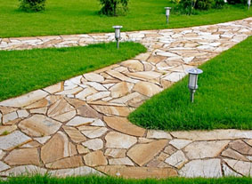
Покрытия для дорожек и площадок:Натуральный камень.
Используют более десятка пород камня - как в обработанном (колотом и пиленом), так и в необработанном (плитняк) виде. Соответственно и фактура варьируется от грубой шероховатой до зеркально гладкой. Вулканическое происхождение ставит покрытия из этих пород вне конкуренции по прочности и долговечности.
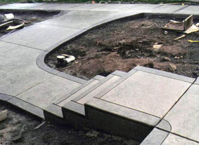
Монолитное бетонное покрытие
применяют для въездной дороги для автомобиля, переходящей в площадку перед гаражом, а также для дорожек для частого хождения.
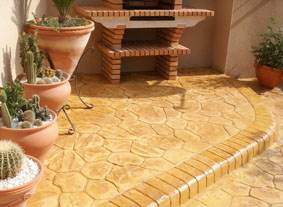
Бетонный камень
близкий по свойствам к натуральной брусчатке, выпускается различных форм и размеров, что позволяет создавать и широкие прямые дороги, и извилистые узкие тропки. Кроме того, бетонный камень успешно применяют при строительстве основных транспортных “магистралей” участка.
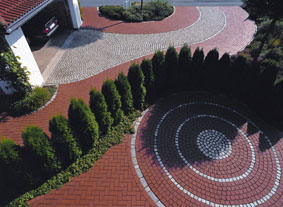
Тротуарная бетонная плитка
предназначена для мощения пешеходных дорожек. От остальных видов жестких покрытий ее отличает богатое разнообразие форм и расцветок. Существует два основных вида бетонной плитки - вибропрессованная и вибролитая. Различные по технологии изготовления, что видно из названия, они обладают и непохожими свойствами. Главная функция вибопрессованной - декор. Недостаток прочности и морозоустойчивости компенсируется эстетическими возможностями применения этого материала. Брусчатка, кирпич, волна, ракетка, соты - ассортимент представленных на отечественном рынке форм тротуарных плиток позволяет воплотить самые яркие и неожиданные идеи в организации ландшафтного пространства. Вибролитая плитка значительно прочнее вибропрессованной. И связано это не только с иным, более долгим и сложным процессом созревания бетона, но и с применением вместо традиционного песка или щебня гранитной крошки и пластификаторов. Подобная плитка гарантирует десять лет безупречной службы. Однако при укладке необходимо обратить внимание на то, чтобы между элементами не застаивалась вода: это может привести к преждевременному разрушению покрытия. Материал хорошо переносит значительные нагрузки, поэтому используется даже при строительстве дорог.
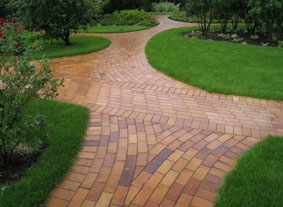
Клинкерный кирпич
по своему составу представляет собой хорошо обожженную глину и обладает высокой прочностью. Это один из самых дорогих материалов.
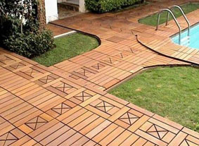
Дерево
- это покрытие декоративно но уступает каменным и бетонным поверхностям в прочности и долговечности.
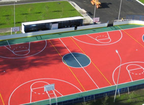
Мягкие покрытия
- это мелкие камни (галька, гравий и щебень), а также песок и мульча (кора, древесная щепа, скорлупа орехов). Покрытия мягкого типа в отличие от брусчатки и плитки - насыпные. Покрытие кладется на подготовленное основание тонкими слоями, каждый из которых трамбуется катком или виброплитой. Недостаток мягкого мощения - недолговечность и подверженность изменениям. Впрочем, непостоянство покрытия легко компенсируется. Для этого достаточно время от времени просто досыпать наполнитель.
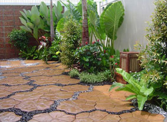
Комбинированные покрытия
- это сочетание жестких и мягких покрытий в одной дорожке.
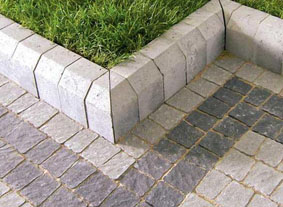
Установка бортового камняПри укладке тротуарной плитки рекомендуется установить по краю бортовой камень, чтобы избежать разрушения плитки после таяния снега или обильных осадков.
Типы бордюров:
Декоративный бордюр
применяется при благоустройстве парков, скверов, территорий вокруг торговых центров и детских площадок, с его помощью выкладывают невысокие ограждения (до 15 см) для обозначения края дорожки, газона или цветника
Дорожный бордюр
используется при строительстве дорог, разделяя проезжую часть от пешеходной зоны и защищая тротуар от возможного наезда автомобиля
Газонный бордюр
служит в качестве газонного ограждения парковых и приусадебных зон, придает садовым клумбам ухоженный и аккуратный вид, а также служит их укреплением
Садовый бордюр
применяется при благоустройстве парков и скверов, детских площадок, дворов и других территорий. С его помощью гармонично завершается загородный и городской ландшафтный дизайн
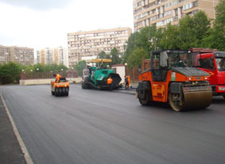
Асфальтирование территорийЭто укладка асфальтобетонных смесей на ранее подготовленное основание. Данный процесс состоит из нескольких этапов. В первую очередь производится расчистка территории. Затем укладывается основание будущей площадки или дороги. Такое основание может быть нежестким — щебень или гравий или жестким — бетон. Затем производится укладка асфальтобетонной смеси и уплотнение слоев.
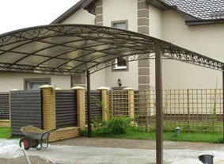
Монтаж навесов:Навесы для автостоянок
Навесы для летних кафе
Навесы для производственных и складских помещений
Навесы для детских площадок, бассейнов
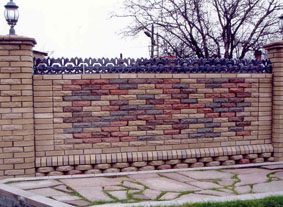
Мы устанавливаем заборы и ограждения:Сварной металлический профиль
Дерево
Сварная сетка
Профнастил
Кирпич и бетон
Металлический штакетник
Сетка-рабица
Сварная сетка
Сотовый поликарбонат и другие